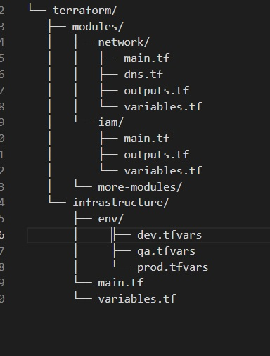

SCC
Brasil
os cloud gurus
Software Cloud Consulting
Your software development, cloud, consulting & shoring company
Terraform Project Structure and Setup
By Wolfgang Unger
If you start to work with terraform will maybe ask yourself, how should you structure your
terraform project?
You can find various example repos and projects in the web, but not all will server for your use
case.
Indeed a found a lot of not really good sample projects, creating a lot of copy&paste
files.
In this tutorial I will try to show a setup which will be usefull in quite a lot of
situations
Of yourse you will have to adapt it for your special needs, but it should serve as a good
generic solution to start.
We want to avoid copy & paste files, re-use our files whenever possible.
Lets first have a look on the structure of the project.

Lets have a closer look into this structure:
Inside the infrastructure folder you have the main tf file. main.tf, variables.tf, outputs.tf if
needed.
In this folder you will execute your terraform commands.
Inside the subfolder env you have the tfvars file for each environment, in this example dev, qa
and prod.
Also a backend.conf file for each environment (qa-backend.conf etc)
You will init the project for the environment you want to address:
terraform init -backend-config="env/qa-backend.conf"
The plan, apply or delete commands you will execute with the tfvars file:
terraform plan -var-file env/qa.tfvars
The main.tf file will include all the modules you want to create for your environment.
These modules are in the subfolder 'modules'
you can structure your modules in subfolders depending on the layers you want to define for your
project.
For example IAM, Network, DB, Storage, Applications, Monitoring, etc
For your modules you can use existing modules if these serve for your like :
source = "terraform-aws-modules/vpc/aws"
or create your own one.
This way you can use a module in all environments and use
cases,
you achieve this
with defining the correct variables.
This should give you a good idea and also a basic project to start with.You can use the project
from my github
and adapt
for your needs.
The sample projects creates roles for your environments ( AdminRole and ReadOnlyRole) and
it will create a VPC for you, you can define ClassB as a variable.
Thus it creates the first two layers (IAM and Networking) for your new project.
Feel free to add more modules with your databases, applications etc
The github project for this blog
Github
Wolfgang Unger - Terraform
Take a look into the Readme for setting up the project in your account(s)
Autor

Wolfgang Unger
AWS Architect & Developer
6 x AWS Certified
1 x Azure Certified
A Cloud Guru Instructor
Certified Oracle JEE Architect
Certified Scrum Master
Certified Java Programmer
Passionate surfer & guitar player